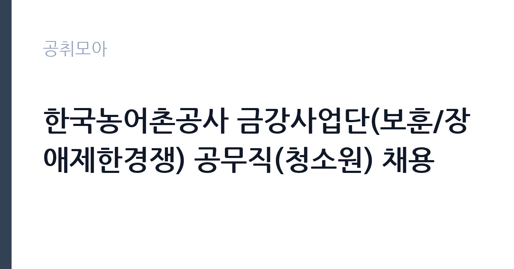

[공공기관] 한국농어촌공사 금강사업단(보훈/장애제한경쟁) 공무직(청소원) 채용
한국농어촌공사 · 전북 · 마감 2026-11-13 (D-15) · 출처 나라일터

한눈에 보는 모집 조건
| 기관 | 한국농어촌공사 |
|---|---|
| 공고명 | 한국농어촌공사 금강사업단(보훈/장애제한경쟁) 공무직(청소원) 채용 |
| 고용형태 | 공무직 |
| 근무지 | 전북 |
| 게시일 | 2026-10-29 |
| 마감일 | 2026-11-13 (D-15) |
지원자격, 이렇게 읽으세요
- 공무직 1명
- 접수 ~2026-11-13 마감
- 세부 조건은 원문 공고문 확인
공무직 근로자는 공무원이 아니라 근로기준법이 적용되는 근로자이지만 기간의 정함이 없는 무기계약으로 채용되는 경우가 많아 정년까지 근무가 가능합니다. 채용은 공무원 시험과 달리 기관의 자체 전형으로 진행되고 인사 규정과 임금표를 적용받습니다. 이번 공고는 한국농어촌공사에서 직접 진행하는 자체 전형으로, 응시자격과 제출서류는 공고문에 항목별로 제시됩니다. 국책사업 전담 인력은 관련 사업 운영 경력과 행정 실무 능력을 함께 봅니다. 계약직이나 기간제로 채용되는 경우가 많아 사업 기간과 재계약 조건을 먼저 확인해야 합니다. 예산 집행과 정산 경험, 보고서 작성 능력이 실질적인 평가 기준입니다. 사업 분야에 대한 이해도 요구되므로 지원 전에 사업 개요와 연차별 목표를 읽어 두어야 합니다. 서류는 접수 마감 이후 보완이 되지 않으므로 자격 요건과 증빙 서류를 마감 전에 모두 갖춰야 합니다. 공고문에 명시된 우대 사항은 해당 여부를 확인해 증빙을 첨부해야 가점이 반영됩니다. 자격증은 유효 기간과 등록 상태를 확인해야 합니다. 갱신이 필요한 자격이라면 갱신 여부를 먼저 점검하십시오. 이 공고 원문에 적힌 응시 조건 문구는 '지원자격: 국가유공자 등 예우 및 지원에 관한 법률에 따른 취업지원대상자 또는 장애인 고용촉진 및 직업재활법에 따른 장애인만 가능 나.'입니다. 문구를 그대로 읽고 본인 해당 여부를 하나씩 표시해 두면 서류 단계에서 탈락하는 일을 줄일 수 있습니다.
이 공고의 포인트
이 공고의 첫 번째 포인트는 고용 형태입니다. 무기계약으로 채용되면 정년까지 근무가 가능해 재계약 부담이 없습니다. 반대로 기간제로 채용되는 공고라면 계약 기간을 먼저 확인해야 합니다. 두 번째는 업무 범위가 명확하다는 점입니다. 국책사업 전담 직무로 채용되므로 배치 이후 담당 업무가 크게 흔들리지 않습니다. 세 번째는 근무지입니다. 전북 지역 근무로 수도권 공고에 비해 지원자 분포가 넓지 않아 상대적으로 경쟁이 분산되는 경우가 있습니다. 재공고로 올라온 공고라 이전 차수 지원자와의 형평성 기준을 확인할 필요가 있습니다. 다만 선발 인원이 1명으로 많지 않아 자격을 갖춘 지원자가 몰리면 경쟁률이 높아질 수 있습니다.
전형은 어떻게 진행되나
1차 서류, 2차 면접의 2단계로 진행되는 구성이 일반적입니다. 서류에서는 자격 요건과 경력 증빙을 확인하고, 면접에서는 실제 업무 수행 능력과 조직 적응을 봅니다. 직무에 따라 필기시험이나 실기, 컴퓨터 활용 시험이 추가되기도 하므로 공고문의 전형표를 먼저 확인하십시오. 단계별로 합격자만 다음 전형에 응시할 수 있고, 단계마다 응시 자격 확인 서류를 다시 제출해야 하는 경우가 있습니다. 최종합격자 발표 후에는 신원조회와 채용 신체검사가 남아 있습니다. 응시 수수료가 있는 경우 환불 기준과 기한이 정해져 있으니 접수 전에 확인하십시오.
원문에서 확인한 전형 방식
1. 채용분야: 공무직(청소원) - 근로조건: 주 5일 / 1일 8시간 근무 2. 채용인원: 1명 3. 근무부서 - 한국농어촌공사 금강사업단(전북도 군산시 철새로45) 4. 직무내용 - 청사 건물 및 시설물의 내외부 청소, 쓰레기 수거 및 처리, 위생 등 주변 환경정비, 조경관리 등에 관한 업무 등 5. 채용기간 - 채용예정일로부터~정년퇴직시까지(만65세) 6. 접수기간: 2026. 10. 29.(목) ~ 11. 13.(금) 18:00 (접수마감일 18:00까지 접수에 한함) 7. 접수방법: 채용홈페이지에서 온라인 접수 / 주소: https://recruit.incruit.com/ekr 8. 선발방법 가. 지원자격: 국가유공자 등 예우 및 지원에 관한 법률에 따른 취업지원대상자 또는 장애인 고용촉진 및 직업재활법에 따른 장애인만 가능 나. 서류전형(100점): 제출서류를 바탕으로 응시자격 및 지원서 작성적합도(불성실 기재여부 등) 심사를 통한 적합자 전원 선발 - 단, 응시인원이 채용인원의 5배수 이상인 경우 서류평가(자기소개서 60점, 경력 20점, 고령자 20점)를 통해 5배수 이내 선발 - 동점자 발생 시 동점자 전원 합격처리 및 동점자를 포함한 대상자
이런 분께 추천해요
- 국책사업 운영이나 정산 실무 경험이 있는 분
- 유관 기관과 협의를 이끌어본 경험이 있는 분
- 사업 기간 내 성과 목표를 관리할 수 있는 분
지원 전 체크리스트
- 응시자격 요건과 경력 기준을 충족하는가 — 경력은 증명서로 입증해야 합니다
- 무기계약 여부와 정년 기준을 공고문에서 확인했는가
- 제출서류 목록을 모두 준비했는가 — 누락 시 서류 단계에서 탈락합니다
- 접수 마감 2026-11-13 이전에 접수 방식을 확인해 제출했는가
모집 일정과 제출 타이밍
2026-10-29에 공고가 올라왔고 접수는 2026-11-13까지입니다. 남은 기간은 15일이며, 이 기간에 자격증 사본과 경력증명서, 주민등록등본 같은 기본 서류를 모두 준비해야 합니다. 경력증명서는 발급에 며칠이 걸리는 경우가 있으니 가장 먼저 신청하십시오. 접수는 온라인과 우편·방문으로 나뉘는 경우가 많고, 우편 접수는 도착 기준으로 판정되므로 마감일 소인만 믿으면 안 됩니다. 면접 일정은 서류 발표 후 개별 통보되므로 제출 후에도 연락을 받을 수 있도록 유지해야 합니다. 공휴일이 끼어 있으면 증명서 발급이 늦어질 수 있으니 발급 일정을 앞당기십시오. 전북 근무지는 지역 내 시설 배치가 넓어 차량 유무가 실질적인 조건이 되는 경우가 있습니다. 마감까지 여유가 있어 자격 요건을 천천히 확인하고 준비할 수 있습니다. 선발 인원이 한두 명 수준이라 지원자 개개인의 서류 완성도가 그대로 평가에 반영됩니다.
직무 이해하기: 공공기관
공공기관은 도로와 수자원, 농지, 부동산 시장 관리 같은 공적 기능을 수행합니다. 현장 사업소는 도로와 시설 유지 관리, 조경과 환경 관리 업무를 직접 수행하며 계절 사업에 따라 기간제 인력을 채용합니다. 국책사업 전담 인력은 정부 지원 사업의 계획 수립과 집행, 성과 관리를 맡습니다. 사업 참여 기관과 기업을 발굴해 협약을 체결하고, 참여자 모집과 교육 과정 운영을 조정합니다. 사업비 집행과 정산, 실적 증빙 관리가 업무의 큰 부분을 차지하고, 정부 부처와 지자체에 보고 자료를 제출합니다. 사업 기간이 정해져 있어 연차별 목표를 달성해야 하고, 중간 평가와 최종 평가를 준비해야 합니다. 대학이나 공공기관의 사업단에 배치되어 기존 행정 조직과 협업하는 구조가 일반적입니다. 업무는 혼자 처리하기보다 부서 단위로 나눠 진행되므로 담당 구역과 협업 범위를 입사 초에 확인하는 것이 중요합니다. 업무 매뉴얼과 지침이 문서로 정리되어 있어 절차를 익히면 반복 업무는 빠르게 손에 붙습니다.
자기소개서 작성 팁
지원서는 사업 단위 성과로 구성하십시오. 맡았던 사업의 규모, 참여 인원, 달성률, 집행 예산을 수치로 제시하면 신뢰가 생깁니다. 정산과 감사 대응 경험은 이 직무에서 특히 강한 소재입니다. 지원 사업의 연차별 목표를 읽고 본인이 맡을 수 있는 부분을 구체적으로 제안하면 준비도가 드러납니다. 구성은 지원 동기, 직무 경험, 기여 방안 순서가 무난합니다. 지원 동기는 한국농어촌공사의 사업 중 본인이 관심을 가진 부분을 한 가지로 좁혀 서술하고 추상적인 표현은 줄이십시오. 직무 경험은 담당했던 업무와 규모, 결과를 수치로 제시하면 설득력이 올라갑니다. 기여 방안은 입사 후 첫 3개월과 1년 계획으로 나눠 쓰면 준비도가 드러납니다.
면접 준비 포인트
면접에서는 사업 운영 실무를 얼마나 아는지 확인합니다. 참여자 모집이 목표에 미달할 때 어떤 대안을 쓸지, 사업비 집행 증빙이 맞지 않을 때 어떻게 처리하는지 묻습니다. 유관 기관과 협의를 이끌어낸 경험도 자주 질문합니다. 사업 기간이 한정되어 있으므로 기간 내 성과 목표를 어떻게 세울지 답하십시오. 답변은 상황, 판단, 조치의 순서로 정리하면 전달이 분명해집니다. 모르는 질문에는 모른다고 밝히고 확인 방법을 제시하는 편이 억지 답변보다 낫습니다. 마지막에는 근무 의사와 함께 2026-11-13 이후 일정에 언제든 응할 수 있다는 점을 전달하십시오. 직무 특성상 체력이나 근무 시간에 대한 질문이 나올 수 있으므로 솔직하게 답하고 관리 계획을 함께 제시하십시오.
급여·근무조건 읽는 법
알리오(공공기관 경영정보 공개시스템) 2025년 결산 경영공시 기준으로 한국농어촌공사 일반정규직 1인당 평균보수액은 7,419만원, 공시된 신입사원 초임은 3,724만원입니다. 평균보수액은 기본급에 고정수당·실적수당·성과상여금·급여성 복리후생비를 모두 합산한 값이라 월 기본급만 보고 판단하면 실제와 크게 어긋납니다. 공무직(무기계약)으로 채용되면 정년까지 근무가 가능해 위 무기계약직 평균보수에 가깝게 형성됩니다. 국책사업 전담 인력은 대부분 계약직으로 채용되어 사업 인건비 기준과 기관 임금 규정을 함께 적용받습니다. 연봉 총액과 계약 기간이 계약서에 명시되므로 월 급여보다 총 보상으로 비교해야 합니다. 성과급과 수당 포함 여부를 확인하십시오. 2026년 적용 최저임금은 시급 10,320원, 월 환산 2,156,880원(주 40시간·209시간 기준)입니다. 고용노동부 고시 제2025-47호로 확정된 금액입니다. 공고문에 금액이 제시되지 않은 항목은 원문 보수표나 처우 설명에서 확인해야 하며 확인되지 않은 수치는 쓰지 않는 것이 원칙입니다. 비교할 때는 월 급여뿐 아니라 상여·명절휴가비·복지포인트·초과근무수당까지 포함한 연간 총액으로 계산하십시오. 기간제라면 계약 기간 동안의 총액을, 무기계약이라면 호봉 상승과 정년까지의 누적 소득을 기준으로 판단하는 편이 정확합니다.
자주 묻는 질문
- 선발 인원은 몇 명인가요?
공고문 기준 1명입니다. 직종별로 인원이 나뉘는 경우가 있으니 모집분야 항목을 함께 확인하십시오. - 근무지는 어디인가요?
전북 지역의 한국농어촌공사 소속 근무지입니다. 세부 주소와 출퇴근 조건은 원문 공고문에서 확인할 수 있습니다. - 보수는 얼마인가요?
채용 신분(공무직)과 기관 임금 규정에 따라 정해지며 구체적인 금액은 공고문 처우 항목에 제시됩니다. 금액이 공개되지 않은 경우에는 원문의 보수표를 확인하십시오.
함께 보면 좋은 공고
[공공기관] 2026년 (재)한국에너지재단 제2차 기간제 채용 공고(채용 제2026-06호) — 마감 2026-11-13[공공기관] 한국고전번역원 2026년 4분기 제2차 직원 신규 채용 — 마감 2026-11-05[공공기관] 계약직 연구원/행정(전북응급의료지원센터) 채용 재공고 — 마감 2026-11-09출처: 나라일터 공개정보를 바탕으로 공취모아가 정리한 안내글입니다. 모집 조건·일정은 변경될 수 있으니 지원 전 반드시 원문 공고문을 확인하세요. 본 글은 정보 제공용이며 합격을 보장하지 않습니다.